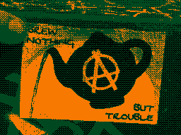

a waste of good stink bugs
I counted two hundred forty three stink bugs
commingling in their lemon tree (like they own the place).
There's a natural repellent they could put on it, she told me,
liquorice extract or something or other
less biohazard more bad smell.
That could be exciting for the bugs, I thought;
taking a great big extended family trip to find a new treehouse.
There's a natural repellent we could put in our lemon tree,
I suggested, he shrugged off,
We've already bought insecticides so may as well use them.
"Imidacloprid kills two ways: systemic and contact!"
Insecticides, pesticides,
those desensitised words.
We've a 'cide for everything.
Plurals of a prejudice,
auspices for this Plantationocene.
We're custodians of these chemicals, I thought, again;
"If not not now then when?"
I counted forty one stink bugs
upturned, poisoned
in the dog-bowl-watering-hole
below our lemon tree (to own the place)
biohazard and bad smell, commingling.
I wish we were waste eaters.
